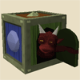

")
Controls - Photo Booth (Members Only)
Introduction
The photo booth is a curious thing indeed, blurring the boundaries between the realm of RuneScape and another plane of existence known as RSOF - the RuneScape Official Forums. The wizard Iconis has been experimenting for many years to find a way to take photographic representations of RuneScape's adventurers, so that they may show the world what they look like when sending correspondence and the like. Despite all of his research, his breakthrough came about when he crossed paths with an imp, who revealed, quite conveniently, that imps have a spell to do just this very thing! They don't half love taking things. So, the pair of them have teamed up and opened a photo booth just outside of Falador.

Photo Booth

Either right-click on Iconis and choose 'Take-picture' or click on the booth itself to enter. Once inside, you'll see the below interface, which can be used just like the 'Show Equipment Stats' interface to try out different looks before taking a snap. Once you're happy with your look, click on the 'Take picture' button and you're done in just two shakes of a lamb's tail.

The photo-taking interface
The photos themselves may take a little while to develop. These things take time, you know - it's not magic! Well, okay, it is magic, but Iconis is but one man, so if the photo booth is busy, give him some time to process your images. Again, due to how popular this new contraption is, you will only be able to use the photo booth once every two hours, so make sure you're happy with how you look before hitting the 'Take picture' button.
Forum Avatars

Head shot

Body shot
You can also use the following HTML (where 'playername' is the name of your character) to directly link to these images on your own website, or any other site you wish to:
Head shot: <img src="http://services.runescape.com/m=avatar-rs/playername /chat.gif">
and
Body shot: <img src="http://services.runescape.com/m=avatar-rs/playername /full.gif">

"There ya go, guv!"
"There ya go, guv!"

More articles in
Controls
|
|
|
Further Help
If this article does not help you, you may find the following sections of the RuneScape site helpful:
|
|